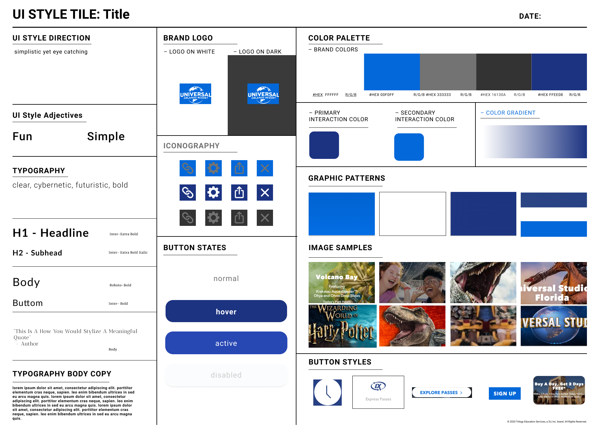
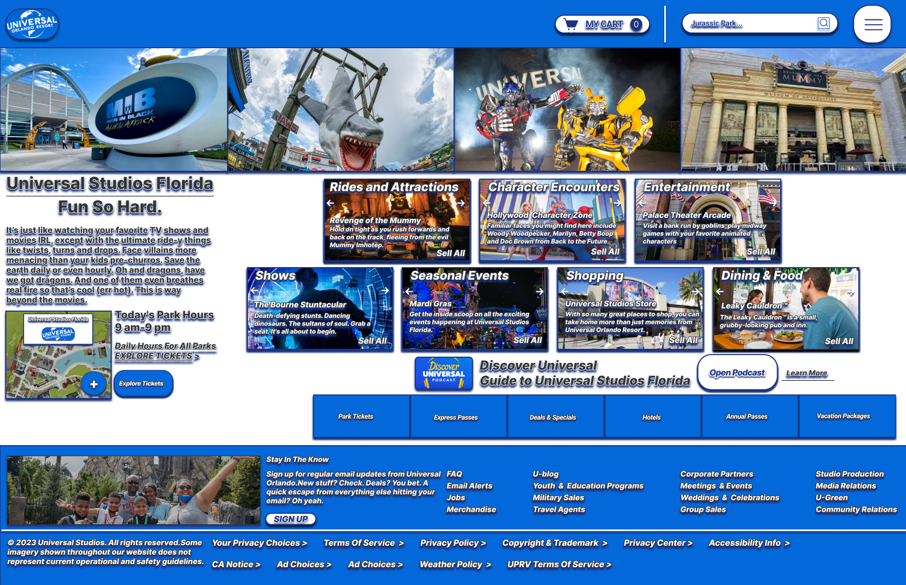

.png)
.png)
Project Information
- Category: Web Design
- Client: Universal Studios
- Project date: MAY, 2023
Universal Studios website redesign
A redesign of the Universal Studios website.
Case Study:
Universal Orlando Resort Website Redesign
Reimagining the Digital Guest Experience
An independent UX/UI redesign exploring how clearer navigation, thoughtful visual hierarchy, and immersive storytelling can make planning a Universal Orlando vacation feel simpler and more exciting.
Originally developed in 2023 and revisited in 2026, this project explores how thoughtful interface design can balance Universal's immersive entertainment identity with practical guest-planning needs.
.jpg)
Project Overview
- Project Name: Universal Orlando Resort Website Redesign
- Project Type: Independent UX/UI Website Redesign Concept
- Role: UX/UI Designer (Solo Designer)
- Tools Used: Figma, Adobe Photoshop, Adobe XD, Google Docs
- Project History: Originally developed in 2023 and revisited in 2026
- Project Scope: Website navigation, information architecture, visual design, vacation planning, responsive layouts, and interactive prototyping
- Target Users: Universal Orlando guests planning vacations, researching attractions, and purchasing tickets
- Objective: Reimagine the Universal Orlando Resort website with clearer navigation, improved information hierarchy, simplified vacation planning, and a modern, responsive interface that reflects Universal's immersive entertainment identity.
Value Added
This independent UX/UI redesign explores how a more organized, guest-focused website could simplify the Universal Orlando vacation-planning experience. By prioritizing intuitive navigation, clearer ticket-booking pathways, improved content hierarchy, consistent visual components, and responsive layouts, the concept aims to help guests discover attractions, access essential park information, and plan their visits with greater ease and confidence.
The Challenge
Problem Statement
Guests visiting the Universal Studios website struggle with a complex and outdated interface that makes it difficult to book tickets, find information, and navigate the site, especially on mobile devices. This negatively impacts user satisfaction and leads to high abandonment rates during critical booking and planning stages.
Identified Issues with the Current Universal Studios Website
- Confusing Booking Process: Guests struggled to locate ticketing options and complete purchases efficiently, contributing to elevated cart abandonment rates.
- Overwhelming Navigation: Excessive menu items and poor content hierarchy made it difficult for users to quickly find information, increasing frustration and session drop-offs.
- Outdated Visual Design: Inconsistent branding, cluttered visuals, and weak visual hierarchy undermined the site's credibility and hindered ease of use.
- Inconsistent Web Responsiveness: The website's layout and interface elements failed to adapt reliably across different screen sizes, with small tap targets, overlapping content, and scaling issues that disrupted the booking and planning experience on mobile browsers.
Why a Redesign?
- To provide a modern, guest-focused experience that minimizes user frustration and improves ticket purchase conversions by simplifying key booking flows.
- To enhance satisfaction and engagement by delivering an intuitive, clean, and visually appealing website that adheres to current UX/UI design standards.
- To build a consistent, immersive digital experience that reflects Universal Studios' dynamic brand while ensuring seamless usability across all device types and screen sizes.
Research & Discovery
Before refining the visual interface, I explored the problems guests might encounter while navigating, discovering attractions, and planning a vacation. This stage helped establish priorities for the redesign.
Research Snapshot
Primary User
Emily Carter, a busy professional and parent, needs fast access to tickets, park info, and planning tools without digging through clutter.
Core Problem
The current experience prioritizes promos over usability, making navigation and booking feel overwhelming, especially on mobile.
Design Goal
Reduce cognitive load with clearer hierarchy, stronger CTAs, and a modern UI that matches Universal's immersive brand energy.
Understanding the User
The persona helps illustrate the needs of a guest balancing family planning, limited time, and the desire for an enjoyable vacation-planning experience.
Persona
.png)
Empathy Map
Exploring user motivations, frustrations, and expectations helped shape a more guest-focused approach to information organization and interface design.

Key Insights
- Planning actions aren't prioritized: tickets, hours, and maps are harder to reach than promotions.
- Navigation is too dense: unclear hierarchy increases time-to-task and causes drop-off.
- UI credibility feels dated: inconsistent spacing and typography reduces trust and readability.
- Mobile usability suffers: crowded layouts make scanning and tapping frustrating.
Point of View
Emily needs a clearer, mobile-friendly Universal website because planning and booking are currently slowed by clutter, buried actions, and weak hierarchy. This redesign prioritizes fast access to key tasks while strengthening brand excitement through a modern UI system.
How Might We?
- Make trip planning faster with clear hierarchy and fewer competing elements.
- Improve booking clarity by elevating CTAs and simplifying decision paths.
- Deliver an immersive, modern experience that stays usable across devices.
Competitive Analysis
I examined how other theme park destinations approach navigation, visual storytelling, and vacation planning to identify useful patterns and opportunities.

Competitive Takeaways
- Disney: strong storytelling, but booking actions get buried in deep menus.
- SeaWorld: functional and clear, but the visual experience feels generic.
- LEGOLAND: fun branding, but cluttered navigation hurts mobile planning.
- Six Flags: promo overload creates cognitive load and slows key tasks.
Feature Prioritization
With the key challenges established, the next step was identifying which features and improvements deserved the greatest attention during the redesign.

The Biggest Design Challenge
- Reduce clutter without losing the excitement and familiarity returning guests expect.
- Rebuild hierarchy so tickets, hours, maps, and planning tools are instantly visible.
- Modernize the UI with improved spacing, typography, and CTA consistency across screens.
From Research to Interface Design
The redesign process focused on translating the research findings into clearer navigation, more intentional layouts, and a cohesive visual language.
My Design Process
- Audit + Competitive Review: identified hierarchy, navigation, and clarity gaps.
- Define Goals: prioritized faster planning and easier booking.
- Wireframes: simplified layout and reduced distractions.
- High-Fidelity UI: improved spacing, typography, and CTA prominence for modern standards.
Visual Direction & UI Style Guide
A consistent visual language was important for making the experience feel cohesive across different pages. Typography, color, spacing, and interface components were refined to support a clearer hierarchy.

Wireframes & Design Evolution
The interface evolved from early structural explorations into a more refined visual experience. These screens demonstrate how the layout, content organization, and presentation developed through iteration.
Low-Fidelity Wireframes
Early wireframes focused on structure, information hierarchy, and arranging content before applying the final visual style.


High-Fidelity Interface Design
The high-fidelity screens introduce the refined visual hierarchy, immersive imagery, typography, and interface components developed for the final concept.
.png)

Key Design Decisions
As the project evolved, I made several key adjustments to improve usability, enhance guest excitement, and align the site with Universal's immersive brand experience.
- Added a full-featured hamburger menu with a clear, organized list of options including Theme Park Portal, Universal Immersive Experiences, and direct links to Settings, Help, Language Selection, Contact, and a simplified Login method to improve account access.
- Renamed primary navigation categories to more fun, theme-driven labels that add personality and excitement to the guest experience while retaining clarity and intuitive wayfinding.
- Replaced static hero images with dynamic, tastefully themed imagery and sneak peek visuals of attractions, giving guests an immediate sense of the Universal Studios atmosphere as they browse.
- Completely reorganized the site footer, which was previously cluttered and disordered, into a clean, structured layout with grouped links, social icons, and a consistent All Rights Reserved statement for a polished, professional finish.
- Adjusted color distribution across UI elements to improve visual hierarchy, ensuring CTAs, alerts, and essential information stood out while maintaining a cohesive brand look and feel.
Design Iterations
Revisiting the project provided an opportunity to compare the original design direction with the refined interface. The goal was to improve consistency, visual hierarchy, and usability without losing the excitement of Universal.
First Iteration vs. Final Iteration



Original Website vs. My Redesign
A side-by-side comparison of the original Universal Studios website and my modern redesign.
Original Universal Studios Website


My Redesigned Experience

What Changed?
- Before: promotions compete with planning tools, users hunt for tickets, hours, and maps.
- After: planning tools are surfaced clearly with stronger visual hierarchy and cleaner layout flow.
- Before: navigation feels dense, especially on mobile.
- After: spacing and CTA placement improve scanning and reduce cognitive load.
Explore the Interactive Prototype
The interactive Figma prototype brings the redesigned interface together, allowing visitors to explore the proposed navigation, visual hierarchy, and overall experience.
Open Interactive Figma Prototype
This is an independent design prototype. Ticket purchases and reservations are not live.
Design Outcomes & Intended Impact
The redesign aims to improve the overall guest-planning experience through more accessible information, clearer decisions, and stronger mobile usability. These are intended design improvements rather than measured usability-test results.
Faster Planning
Key actions like tickets, hours, and maps are surfaced earlier so users spend less time searching and more time planning.
Clearer Decisions
Stronger hierarchy and cleaner sections reduce overwhelm, helping users understand what to do next without hesitation.
Better Mobile Usability
Improved spacing and CTA consistency make the experience easier to scan, tap, and complete on smaller screens.
Reflection & What I Learned
Returning to this project allowed me to revisit my earlier design decisions with a stronger understanding of interface design, visual hierarchy, and the importance of creating experiences around user needs.
- Balancing Visual Appeal and Usability: Creating a visually engaging website while maintaining clear navigation and easy user flows is crucial for a successful web design.
- Conducting Self-Guided Research: When direct user feedback isn't available, using personas, competitor analysis, and personal observations helps identify user needs and pain points.
- Iterative Design Process: Refining wireframes and mockups through multiple iterations improves visual hierarchy, spacing, and the prominence of key calls to action.
- Reflecting Brand Identity in UI: Translating the Universal Studios brand into a modern, clean web design that is both professional and playful enhances user engagement and trust.
- Improving Content Structure: Simplifying navigation and organizing content clearly helps users find important information quickly and efficiently.
Next Steps
Future improvements would include usability testing with representative guests, validating the redesigned navigation, reviewing accessibility, and refining responsive interactions across mobile, tablet, and desktop devices.
The most valuable lesson from this project is that immersive visual design and practical usability should work together, not compete for attention.
Independent UX/UI portfolio concept by Rojas Design Studios. Not affiliated with, commissioned by, or endorsed by Universal Orlando Resort.